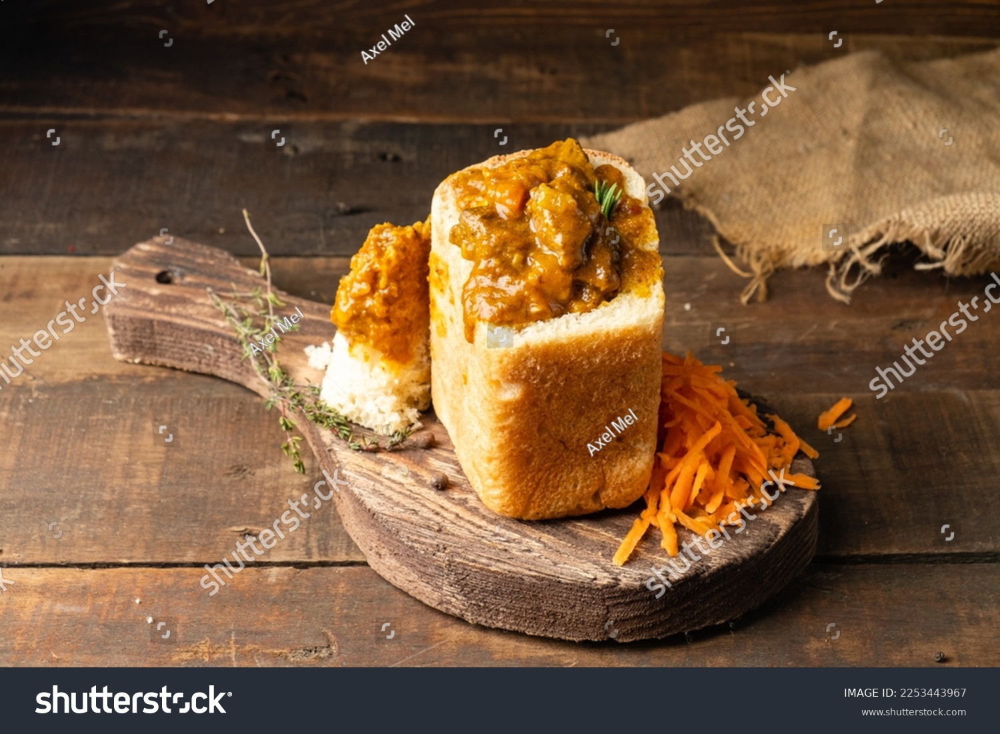

Bunny Chow

Description
Ingredients
- 1 loaf White bread (unsliced)
- 1 lb Lamb or chicken (cubed)
- 2 Potatoes (cubed)
- 1 Onion, 2 cloves Garlic, 1 tsp Ginger (minced)
- 3 tbsp Durban curry powder
- 1 can Chopped tomatoes
Steps
- Sauté onions, garlic, and ginger. Add curry powder and cook until fragrant.
- Add the meat and brown. Stir in tomatoes and potatoes.
- Simmer until the meat is tender and the potatoes have thickened the sauce.
- Cut the bread loaf in half or quarters. Scoop out the middle (the "virgin"), leaving a thick crust wall.
- Ladle the curry into the bread hollow and place the scooped-out bread on top for dipping.
Home